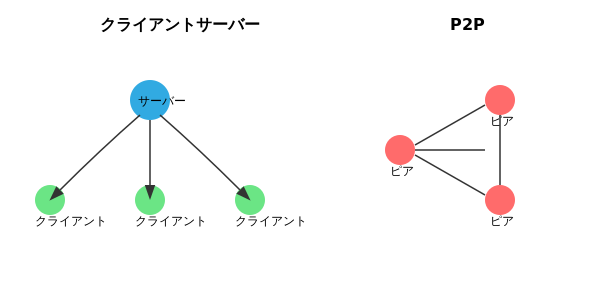

JavaScriptでP2P通信をする方法
PeerJSを使った実践的な解説
#P2P通信とは？
P2P（Peer-to-Peer）通信とは、中央のサーバーを介さずに、個々のノード（コンピュータ）が直接データをやり取りする通信方式です。 一般的なWebアプリはクライアント⇔サーバ型（中央集約型）ですが、P2Pでは各端末が互いにサーバー兼クライアントとなり、より効率的かつ分散的な通信が可能です。

#P2P通信のメリットとデメリット
| 項目 | メリット | デメリット |
|---|---|---|
| サーバ不要 | 中央サーバなしで通信が成立 | 初期接続にはシグナリングが必要 |
| 冗長性 | 一部ノードが落ちても通信可能 | 各ノードの安定性に依存 |
| コスト | 運用コストが低い | セキュリティ管理が分散 |
| スケーラビリティ | ノード増加で性能拡張 | 管理が複雑化 |
#P2P通信の活用例
ファイル共有
例：BitTorrent
ビデオ・音声通話
例：WebRTC
ブロックチェーン
例：Bitcoin
分散型SNS
例：Mastodon
#実際のP2P通信を試してみよう
リアルタイム通信デモ
以下のフォームを使って、相手のIDを入力し接続し、テキストを送信できます。
通信ログ:
#使用方法（2人で試す）
1
ページを2人で開く
同じLANまたはインターネット経由で2人がこのページを開きます。
１人で試す場合は、ブラウザでこのページを２つ開いてください
2
IDをコピー・共有
一方の人が自分のIDをコピーして、もう一方の人に教えます。
3
接続する
教えてもらったIDを「相手のID」欄に入力して「接続」ボタンを押します。
4
メッセージ送信
メッセージを入力して「送信」ボタンを押すと、リアルタイムで相手に届きます。
#JavaScriptコードの解説
💻 通信できる最低限の完全なコード
// HTML部分
<!DOCTYPE html>
<html lang="ja">
<head>
<meta charset="UTF-8">
<title>P2P通信テスト</title>
<script src="https://unpkg.com/peerjs@1.4.7/dist/peerjs.min.js"></script>
</head>
<body>
<h1>P2P通信テスト</h1>
<div>
<label>あなたのID:</label>
<input type="text" id="my-id" readonly>
</div>
<div>
<label>相手のID:</label>
<input type="text" id="target-id">
<button onclick="connect()">接続</button>
</div>
<div>
<label>メッセージ:</label>
<input type="text" id="message">
<button onclick="sendMessage()">送信</button>
</div>
<div id="messages"></div>
<script>
// JavaScript部分
const peer = new Peer();
let connection = null;
// 自分のIDが発行されたときの処理
peer.on('open', function(id) {
document.getElementById('my-id').value = id;
log('あなたのID: ' + id);
});
// 相手から接続要求があったときの処理
peer.on('connection', function(conn) {
connection = conn;
setupConnection(conn);
log('接続を受け入れました: ' + conn.peer);
});
// 接続処理
function connect() {
const targetId = document.getElementById('target-id').value;
if (!targetId) return;
connection = peer.connect(targetId);
setupConnection(connection);
log('接続を試行中: ' + targetId);
}
// 接続設定
function setupConnection(conn) {
conn.on('open', function() {
log('接続が確立されました');
});
conn.on('data', function(data) {
log('受信: ' + data);
});
}
// メッセージ送信
function sendMessage() {
const message = document.getElementById('message').value;
if (connection && connection.open && message) {
connection.send(message);
log('送信: ' + message);
document.getElementById('message').value = '';
}
}
// ログ表示
function log(message) {
const div = document.createElement('div');
div.textContent = new Date().toLocaleTimeString() + ': ' + message;
document.getElementById('messages').appendChild(div);
}
</script>
</body>
</html>🔍 詳細な動作解説
1. 基本構造と必要なライブラリの読み込み
- PeerJSライブラリ:
<script src="https://unpkg.com/peerjs@1.4.7/dist/peerjs.min.js"></script>でWebRTCを簡単に使えるライブラリを読み込みます。 - HTML構造: 必要最小限のUI要素（ID表示、接続フォーム、メッセージ入力、ログ表示）を配置します。
2. 初期化とグローバル変数
const peer = new Peer();: PeerJSのインスタンスを作成。これによりシグナリングサーバーとの接続が開始されます。let connection = null;: 現在の接続を管理する変数。1対1通信の場合はこれで十分です。
3. IDの取得と表示
peer.on('open', function(id) { ... }): PeerJSサーバーから自分のIDが発行されたときに実行されるイベントハンドラです。- 発行されたIDをHTMLの入力欄に表示し、ログにも記録します。このIDを相手に教えることで接続が可能になります。
4. 接続の受け入れ
peer.on('connection', function(conn) { ... }): 他のピアから接続要求があったときに自動実行されるイベントハンドラです。- 接続オブジェクトを受け取り、
setupConnection関数でデータ送受信の準備をします。
5. 能動的な接続
connect()関数: 入力された相手のIDに対して接続を開始します。peer.connect(targetId): PeerJSの接続メソッドを使用し、接続オブジェクトを取得します。- こちらから接続する場合も、同様に
setupConnectionでイベント処理を設定します。
6. 接続後のイベント処理
conn.on('open', ...): WebRTCのデータチャネルが開通した時の処理。実際の通信が可能になったことを示します。conn.on('data', ...): 相手からデータを受信した時の処理。受信したメッセージをログに表示します。
7. メッセージ送信
sendMessage()関数: 入力されたテキストを相手に送信します。connection.openで接続状態を確認してからconnection.send()でデータを送信します。- 送信後は入力欄をクリアし、ログに送信内容を記録します。
8. ログ機能
log()関数: 通信の状況を時刻付きでHTMLに表示する補助関数です。- 接続状況、送受信メッセージ、エラー情報などを逐次表示し、通信の流れを視覚的に確認できます。
🔧 JavaScriptコードの詳細解説
📋 変数宣言とオブジェクト生成
const peer = new Peer();
let connection = null;const peer = new Peer();: Peerクラスのインスタンスを作成し、peer変数に格納します。このオブジェクトがP2P通信の核となります。let connection = null;: 現在アクティブな接続を管理する変数です。letで宣言されているため、後から値を変更できます。
🆔 IDイベントハンドラ
peer.on('open', function(id) {
document.getElementById('my-id').value = id;
log('あなたのID: ' + id);
});peer.on('open', function(id) { ... }): onメソッドでイベントリスナーを登録します。'open'イベントはID発行時に発火します。document.getElementById('my-id').value = id;: DOMのgetElementByIdメソッドで要素を取得し、valueプロパティにIDを設定します。log('あなたのID: ' + id);: 文字列結合（+演算子）を使ってメッセージを作成し、log関数に渡します。
📞 接続受け入れハンドラ
peer.on('connection', function(conn) {
connection = conn;
setupConnection(conn);
log('接続を受け入れました: ' + conn.peer);
});peer.on('connection', function(conn) { ... }): 他のピアからの接続要求を受信した時のイベントハンドラです。connection = conn;: 受け取った接続オブジェクトをグローバル変数に代入し、他の関数からアクセス可能にします。conn.peer: 接続オブジェクトのpeerプロパティには、相手のIDが格納されています。
🔗 接続開始関数
function connect() {
const targetId = document.getElementById('target-id').value;
if (!targetId) return;
connection = peer.connect(targetId);
setupConnection(connection);
}function connect() { ... }: 関数宣言により、connectという名前の関数を定義します。if (!targetId) return;: 論理NOT演算子（!）で値の存在をチェックし、空の場合はreturnで関数を終了します。peer.connect(targetId): PeerJSのconnectメソッドで相手との接続を開始し、接続オブジェクトを返します。
⚙️ 接続設定関数
function setupConnection(conn) {
conn.on('open', function() {
log('接続が確立されました');
});
conn.on('data', function(data) {
log('受信: ' + data);
});
}function setupConnection(conn) { ... }: パラメータconnを受け取る関数です。接続オブジェクトに必要なイベントリスナーを設定します。conn.on('open', function() { ... }): WebRTCデータチャネルが開通した時のイベントハンドラです。conn.on('data', function(data) { ... }): データ受信時のイベントハンドラで、dataパラメータに受信データが渡されます。
📤 メッセージ送信関数
function sendMessage() {
const message = document.getElementById('message').value;
if (connection && connection.open && message) {
connection.send(message);
log('送信: ' + message);
document.getElementById('message').value = '';
}
}const message = document.getElementById('message').value;: メッセージ入力欄の値を取得し、message変数に格納します。if (connection && connection.open && message): 論理AND演算子（&&）で複数条件をチェックします。3つすべてが真の場合のみ実行されます。connection.send(message): 接続オブジェクトのsendメソッドでデータを送信します。document.getElementById('message').value = '';: 送信後に入力欄を空文字でクリアします。
📝 ログ表示関数
function log(message) {
const div = document.createElement('div');
div.textContent = new Date().toLocaleTimeString() + ': ' + message;
document.getElementById('messages').appendChild(div);
}const div = document.createElement('div');: createElementメソッドで新しいdiv要素を作成します。new Date().toLocaleTimeString(): Dateオブジェクトのインスタンスを生成し、toLocaleTimeStringメソッドで現在時刻を文字列化します。div.textContent = ...: 要素のtextContentプロパティにテキストを設定します。HTMLタグは解釈されず、純粋なテキストとして表示されます。document.getElementById('messages').appendChild(div);: appendChildメソッドで作成した要素をDOMに追加します。
#技術的な詳細
使用技術
- PeerJS: WebRTCを簡単に使えるライブラリ
- WebRTC: ブラウザ間のリアルタイム通信API
- JavaScript: フロントエンド制御
通信の流れ
- PeerJSサーバーからIDを取得
- IDを交換してシグナリング
- WebRTCでP2P接続確立
- 直接データ通信開始
#実践的な応用例
このP2P技術を応用して、リアルタイムでメッセージを交換できるウェブアプリケーションを作成しました。以下のリンクから実際に試したり、ソースコードを確認したりできます。
本コンテンツの作成時間（HTML/CSS/JavaScriptの設計・実装を含む）：約10時間